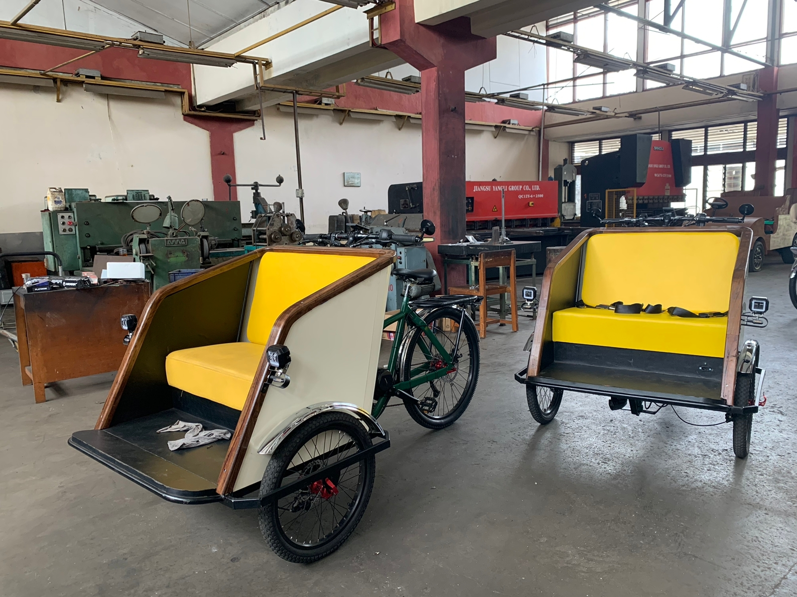

BECAK LISTRIK

Becak merupakan salah satu ikon transportasi tradisional di Yogyakarta. Namun, becak tradisional memiliki beberapa kekurangan, seperti emisi gas buang yang mencemari lingkungan dan polusi suara. Untuk mengatasi masalah ini, Balai Latihan Pendidikan Teknik (BLPT) Yogyakarta mengembangkan becak listrik yang ramah lingkungan dan hemat energi
Tujuan awal dari becak listrik ini untuk mengurangi polusi udara yang dihasilan dari Becak motor, dan dengan adanya becak listrik ini tidak akan menghilangkan nilai historis dari becak tradisional. Becak listrik ini dapat diatur kecepatannya, dan cara menggunakan nya pun sangat praktis. Design becak motor inipun memiliki design yang menarik, selain itu becak listrik ini berbeda dari becak. becak lainnya karena memiliki proteksi keamanan seatbelt. Kelemahan dari becak listrik ini yaitu belum di uji coba dan masih dalam bentuk prototype. Sebelum memasuki tahap produksi massal sebuah produk harus diuji coba hingga memenuhi Standar Nasional Indonesia (SNI). Bagaimana jika barang tidak memenuhi Standar Nasional Indonesia? Maka produk tersebut akan diserahkan kembali kepada kepatihan sebagai sumber dana APBD dan dana istimewa.
Jika becak listrik telah memasuki produksi massal, becak listrik ini akan diarahkan kepada para pembecak. Becak listrik tidak dibagikan secara gratis tetapi akan diperjual belikan dengan harga relatif rendah tanpa mengurangi sedikitpun kualitasnya. Komposisi bahan produksi prototype becak listrik bermacam-macam dan tidak 100% barang lokal. Penggerak becak berasal dari China, Besi berasal dari produk lokal (Krakatau steel), Jok merupakan produk handmade BLPT. Kurun waktu proses produksi 6 bulan, Becak listrik ini dikerjakan oleh berbagai jurusan teknik dari Balai Pendidikan Latihan Umum (BLPT) yaitu otomotif, mesin, elektro dan perkayuan.